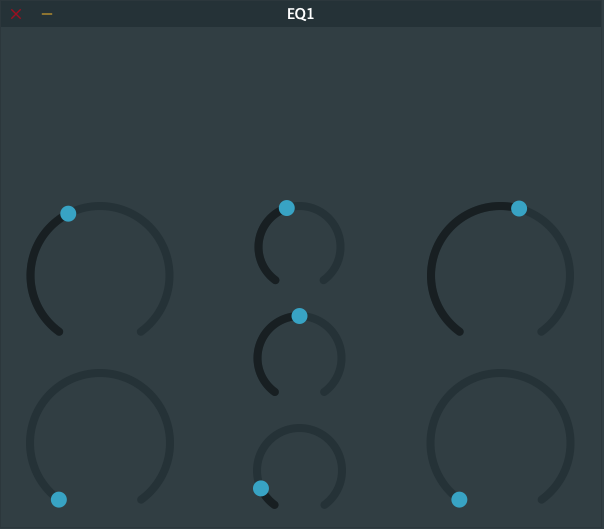
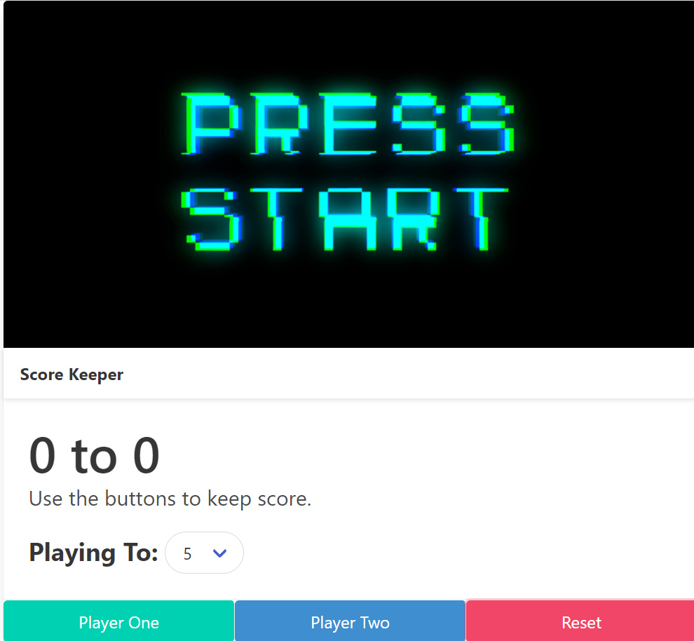

"Strive not to be a success, but rather to be of value" - Ablert Einstein
1. EQ1 |
High Cut, Low Cut, Mid Sweep Equalizer |
|  |
Project: This EQ is being designed using the course "Learn Modern C++ by Building an Audio Plugin (w/ JUCE) - Full Course" provided in the link below. This was my first time experimenting with the JUCE framework and my second time dealing with a large project file. Some challenges I faced were mainly related to the code and making sure all variables remained consistent. In the YouTube course I chose to follow, you will notice this is not the complete product. I decided this was a good stopping point so I can study the code and get used to the workflow of building projects in JUCE. |
2. Score Keepr |
Game Score Keeper |
|  |
Project: This project was developed using a course on Udemy "The Web Developer Bootcamp" by Colt Steele. I used this course to learn HTML, CSS, and JavaScript. This project was designed to test my JavaScript knowledge. The project code can be found in the course; however, to best put my skills to the test, I attempted to code this project on my own and only used the course as a reference when I got stuck. Some challenges I faced were related to JavaScript events and remembering exactly which one to use and when. Aside from that, this section of the course also introduced me to the Bulma CSS framework. Overall, it was a fun project and very insightful. |